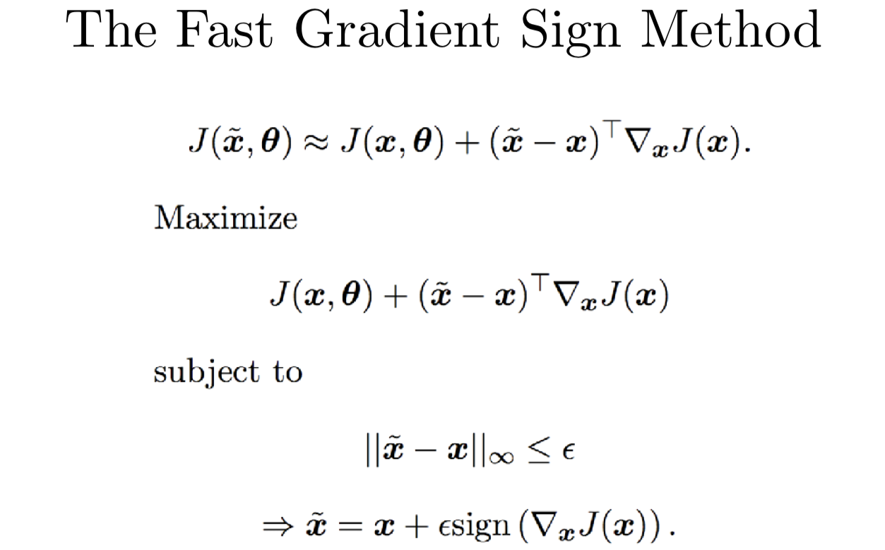

CS231n 课程的官方地址：http://cs231n.stanford.edu/index.html
该笔记根据的视频课程版本是 Spring 2017(BiliBili)，PPt 资源版本是 Spring 2017.
Guest Lecture. Adversarial Examples and Adversarial Training
- Slide...
我今天要给你们介绍一下对抗样本和对抗训练。

回顾一下，先来讲讲，对抗样本是什么。再来解释一下对抗样本为何会涌现出来，或者说为什么它们是有用的。我会讲一点对抗样本如何构成现实世界的安全威胁，包括使用对抗手段来损坏基于机器学习的系统。我会讲一下目前的防御手段，但大部分的防御手段仍然是开放的研究问题。我希望你们其中的某些人可以去深入研究。最后我会讲一下如何使用对抗样本，来提高其他机器学习算法的性能，就算是你只想构建一个不需要面临现实世界对抗的机器学习算法。

看（上面）这张大图和这次讲座的课题，我相信在场的大多对机器学习在各种不同的项目上的惊人功力和巨大成就有所耳闻。以前这些问题都不能用软件编程解决，多亏了深度学习、卷积网络、梯度下降，这些问题都得以解决，这些技术都效果非常好。一直到几年前，这些技术才真正开始有效，
大概在2013年，我们看到深度学习在很多问题上达到了人类水平。可以看到卷积网络在识别目标和图片时，在这些基准集上得分和人差不多，人类和机器达到同一水平，一部分原因是一般人区别不了阿拉斯基哈士奇和西伯利亚哈士奇。但抛开这些基准集中的特殊情况，应用在目标识别中的深度学习，在2013年左右就已经赶上人类水平了。同一年，我们也见证了目标识别在人脸方面应用也和人类达到了同一水平，就是说忽然之前，我们就有可以和你我识别陌生人能力媲美的能识别人脸的计算机了。在辨别朋友和家人的人脸方面，你肯定会比计算机强，但你在辨别那些你没怎么打过交道的人的时候，计算机在2013年就和我们差不多了。我们还见证了2013年计算机在识别照片上的字体也和人类水平差不多，甚至导致我们无法使用验证码来区分网页用户是人类还是机器了，因为卷积网络在识别模糊文字上比人类还厉害。
所以现在深度学习的效果那么好，尤其是计算机视觉的效果那么好，所以现在能够让计算机犯错误的情况是越来越少了。但在2013年以前，没有人会对计算机犯错误感到惊讶，计算机犯错误是个常态而不是例外，
所以今天我们要讲的是深度学习算法造成的罕见的错误。这个主题都不是一个正儿八经的学习主题，直到算法大部分情况下效果都不错的时候。现在人们研究的是算法崩坏的情况，这其实是例外而不会常规。

对抗样本是那种用心构造出来会被分错类的样本。大部分情况下，我们会构造一个对人类观察者来说，看起来和原始图片不可区分的新图片。
我（上面）给你展示一个关于熊猫的例子。左边是一个熊猫，没有经过任何修正，在 imagenet 数据集上训练好的卷积网络，能够识别出这是一个熊猫。有意思的是这个模型对于这个判断没有十足的把握，大概有60%的概率认为这张图片是一个熊猫。如果我们确切地计算如果对图片做一个修正，使得卷积网络在识别修正后的图片犯错误，我们找到一个由（上图）中间的图像给出的移动所有像素的最优方向。在人们看来这很像是噪声，但它其实不是噪声，也是用心构造出来的一个网络参数的函数，其实这个函数有着复杂的结构。如果我们把构造出来的攻击图像乘上一个非常小的系数，然后加到原始的熊猫图片上，我们就可以得到一个人类看起来和原来熊猫看起来完全没有区别的图片。实际上幻灯片（上图）右边的熊猫和左边的熊猫就是看不出来区别。但当我们把这张新图片给卷积网络看时，我们使用32位浮点数，这个显示器只能展示8位颜色分辨率（256种颜色）。我们只改变那么一丢丢，甚至小到都无法影响其中最小的8位，但影响到了32位浮点数表示中的其他24位。但这一点点的区别就足够欺骗卷积网络，这次它把熊猫认成一只长臂猿。
另一件有意思的事情是，它还不只是改变了分类，还不仅仅是碰到决策边界（熊猫和长臂猿的类别边界），然后就那么跨过去（分错类）了而已。卷积网络居然还对它错误的分类预测有了很高的置信度，就是说网络认为右边图片是一只长臂猿的置信度，比原始图片是一只熊猫的置信度还搞。网络认为（上图）右边的图片99.9%的概率是一只长臂猿，就在刚才，卷积网络还觉得左边的图片有 1/3 的可能不是一只熊猫，现在它居然就几乎敢肯定右边是一只长臂猿了。
以前曾经有人研究各种可以欺骗不同的机器学习模型的计算攻击手段，至少是2004年开始的，或者更早。很长时间以来，我们做到了欺骗垃圾邮件检测器。大约在2013年，Battista Biggio 发现可以用这种方式来欺骗神经网络，在差不多时间，我的同事 Christian Szegedy 发现可以用这种攻击来对抗深度神经网络，只要用一个搜索图片输入的优化算法。

我今天会给你们聊很多我自己在这个主题上的一些后续工作。我前几年花了很多心思来理解为什么这些攻击是可行的，为什么那么轻易就骗过了卷积网络。当我的同时 Christian 和 Battista Biggio 在差不多时候自己独立地发现了这个现象，他试图做的其实是一个可视化结果。他不是在研究安全性，也不是在研究如何欺骗一个神经网络。相反，他有了一个可以很好地识别目标的卷积网络，他想知道这个网络到底是如何工作的。于是他就想到他可以拿一个场景的图片，比如说船的照片，然后他逐步地变换图片，直到网络认为，那是一架飞机。在形变过程中，看起来像飞机背后的天空或许可能是背景编程蓝色了，又或者船长长出翅膀了看起来像飞机。你可以从中得到结论，即卷积网络到底是用蓝天还是用翅膀来识别飞机的。然而事实并不是这样的，你从（上图）左往右，从上往下看，这里展示的每个分块都是基于对数概率的梯度上升，根据卷积网络模型，输入的是一架飞机，我们根据图像的输入的梯度来看。你大概已经习惯了模型参数梯度这一套东西，可以用反向传播的方法来计算输入图片的梯度是和计算参数梯度一样的流程。
（上图）左上角这个船的动画，我们可以看到五个版图看上去基本上差不多，梯度下降看起来对图片一点影响都没有。但到最后一张图片，网络已经完全确信那是一架飞机，当你第一次写这种实验的代码时，尤其是你不知道会发生什么的时候，就感觉你的脚本里有 bug，那就把同样的图片一遍一遍地重复播放，我第一这样做的时候，我不敢相信正在发生的事，我不得不用 numpy 打开图片比较它们的区别确认它们确实是有区别的。我这里展示几个不同的动画，有船，车，猫和卡车。只有一个就是猫的图片，我看到真的有变化，猫脸的颜色有一点点变化，可能变得有一点点像飞机的金属色了。除开这个，其他的动画我是真的一点区别都没看出来，我也都没看出一丢丢飞机的意思。所以梯度下降并不是把输入变成飞机，而是发现了一张可以欺骗网络的，可以让网络认为输入是飞机的图片。如果我们是恶意的攻击者，我们都不用努力研究如何欺骗网络，我们只要要求网络给我们一张飞机的图片，它就会给我们一张图片，这张图片能够让它误以为这是一张飞机的图片。

当 Chrisian 第一次发表这个成果的时候，很多文章一起涌现出来，诸如 《The Flaw Looking At Every Deep Neural Network》或《Deep Learning has Deep Flasws》 之类的标题的文章。记住这些容易犯错的脆弱点很重要，把它运用在几乎每个我们已经研究过的机器学习算法上，比如说其中有 RBF 算法和配比函数密度估计，它们可以一定程度上抵抗这种影响，但即使是非常简单的机器学习算法，在对抗样本上也非常容易出错。
在（上面）这张图片里，我展示了当我们攻击一个线性模型的时候会发生什么。这根本不是一个深度学习算法，只是一个浅层的 softmax 模型，你就乘上一个矩阵加一个偏移向量，运用 softmax 函数，这样你就得到了10个 MNIST 分类的概率分布。在（上图）左上角，以 9 这个数字的图片开始，从左到右，从上到下，我慢慢地把它变成0。我画黄框的地方，模型认为这很可能是0。我忘记了我对于高可能性定义的那个阈值，我记得大概是0.9左右。接下来我们看第二行，我把它慢慢变成1，第二个黄框表明，我们成功欺骗到模型，使它认为那大概率是1。接下来看余下的图片，从左到右，从上到下，我们试验了二三四等等。直到右下角，我们有一个 9 用黄框标出来了。它看起来就是一个9，但就是因为它看起来像 9，完全是因为我们整个过程都围绕 9 的。我们基本上没有改变你数字的图像，至少人类是看不出区别，但已经成功欺骗了 MNIST 上的 10 个类。
这个线性模型太好骗了。

除了线性模型，我们还发现了我们可以欺骗更多种线性模型，包括逻辑回归和支持向量机。我们还发现我们可以欺骗决策树，还能欺骗近邻分类器。

我们想要解释清楚为什么会这样。
回到2014年，我们发表原始那篇文章以后，我们在文章里说有这么些问题，我们试图研究出为什么会这样。我们最开始以为这是某种过拟合现象，因为你有一个很复杂的深度神经网络，它要学着去适应训练集，但在测试集上的行为是未经过定义的，这样就会随机犯错，这样攻击者就会利用这个弱点。
我们再好好地回顾一下整个流程。我这里要训练一个有三个蓝 X，十三个绿 O 的训练集。我们想要做一个分类器来识别 X 和 O。我们有了一个非常复杂的分类器，可以很简单地适应于训练集。那我们就把它认为是 X 涂成蓝色的一块。那我就在训练集中 X 的周边都涂成蓝色。这样它能正确区分训练集上的 O 和 X。它还有一块绿色的表示 O 的位置，这个分类器在绿色训练集 O 上拟合的很成功，但因为它是一个非常复杂的函数，它的参数个数比实际表示这个训练任务需要的参数多得多，它在其他未知空间中随机按概率密度分块。左边有一块绿色的区域离训练集中 X 比较近，我画了一个红色的 X 表示这可能将是一个对抗样本，我们预测分类是 X，但模型认为是 O。在右边，我画了一个红色的 O，是另一个对抗样本。在离其他 O 很近的地方，我们希望分类器也识别为 O。但因为是画蓝色的块，其实网络认为是 X。
如果真的是因为过拟合引起的，那么每个对抗样本总归是或多或少运气不好的结果并且是独一无二的。如果我们再次拟合这个模型，或者说我们拟合一个有点不一样的模型，我们期待会在训练集上随机地犯别的错误。但事实和我们所发现的完全不符，我们发现不同的模型容易在同一个对抗样本上犯错，并且他们还会指定同样的类给他们。我们还发现，如果我对原始样本和对抗样本研究其区别，我们在输入空间有一个方向，我们可以对其他任何没有噪声的样本上加一个相同的偏移向量，我们这样操作几乎总能得到一个对抗样本。于是我们开始意识到这是一种系统性效应，而不只是随机效应。

这激发了我们另一个想法，这些对抗样本可能更像是欠拟合，而不是过拟合。它们可能是因为模型太线性了。同样的我们有流形的 O 和线性的 X。这次我们用线性模型来拟合这个数据集，而不是用一个高容量的非线性模型。我们看到我们得到一个超平面，把两个类从中间分开。这个超平面并没有捕捉到两类的真实结构。O 很明显排列成一个 C 的形状的流形。如果我们沿着 O 一路看下去，我们其实是穿过了决策边界。这里我们画了一个红色的 O，就算是我们离决策边界很近，就算是离其他 O 很近，我们还是判断这是一个 X。同样地，当我们一步步地从 X 附近看过去，看到那个跨越分界线被分类成 O 的那个点。这个图另一个不寻常的事情是，当我们看着左下方或右上方的时候，这些点非常确信被分类成相应的类，就是 X 是左下方，O 是右上方。即使我们从没有在数据里见过这个部分的点，线性模型组使得模型在这些区域里有很高的置信度，因为它们离决策边界很远。

我们看到线性模型实际上对距离决策边界很远的地方有非常高的置信度，就算那里一点数据都没有。但深层神经网络真的等同于线性模型吗？线性模型是不是就能解释那些深度神经网络做不到的事情？
现代的深度神经网络其实是分段的线性函数，而不是一个单一的线性函数，它们是分段线性的（piecewise linear），可能没有那么多线性分段。如果我们用 relu（作为激活函数），然后将输入图像映射成数字并输出，实际上这个映射就是一个分段线性函数。我的意思是，我们在对模型输出做 softmax 映射之前的一个非正则化的对数概率。这里有很多其他的神经网络，比如说 maxout 网络其实说起来也是分段线性的。后来还有几种与其非常相近的函数。在 ReLU 流行起来之前，大部分人习惯用各种形式的 sigmoid 函数， 要么是 logistic sigmoid 或是 tanh。这些 sigmoid 类型的函数需要非常认真地调参，尤其是在初始化的时候，所以你大部分的时间，要用在 sigmoid 上，这里 sigmoid 几乎是线性的。还有 LSTM 一种循环网络，是目前年最流行的循环网络之一。为了跨时间的积累和记住信息，LSTM 利用了从一个时间步向下一个时间的加和。加和（addition） 是一种特别简单的线性运算，我们可以看成是某个很远时间点和现在时刻的一种交互作用。这种 LSTM 中的交互是高度线性的。我现在说的是把模型的输入映射到模型的输出，我希望这个映射是线性的，或者是只有几段的分段线性模型。这个从模型参数到模型输出的映射是非线性的，因为每层网络的权重矩阵是要乘在一起的。我们其实得到的参数和输出之间的关系其实是非线性的，这就是为什么训练神经网络这么困难了。虽然输入到输出的映射是线性的而且可预测的，而且它还是一个优化问题，用来优化模型输入，这比用来优化参数的优化问题要简单得多。

我们回顾下实际的操作，如果我们用一个卷积神经网络跟踪一个一维的输入空间中的路径。我们选一个没有噪声的例子，这是一张白色汽车在红色背景上的图片，然后我们选择一个方向将穿越空间。我们会有一个系数 epsilon 乘以这个方向（的特征向量）。当 epsilon 是 -30 时，就像图片最左边，我们减掉了数倍的单位方向向量，当 epsilon 时 0 时，就像是图片中央的这些，我们可以看到数据集的原始图片，但 epsilon 是 +30 时，就像图片的最右端，为我们对输出加上这个方向。图表的左端，我会展示一个动画，我们把从 epsilon 从 -30 逐渐增加到 +30。当你从左往右，从上往下看这个动画，我们有黄框标出来的地方，就是这个输入被识别成汽车的地方，在左上角，你可以看到几乎都是蓝色的，在右下角，你几乎都说不清楚是什么情况，好像有一点红兮兮的。最中间的一排，在黄框后面，你可以清楚地看到有一辆车在红色的背景里，虽然图片在这个投影仪上看起来很小。有意思的是，当你查看模型输出的分类，这是一个深度卷积 ReLU 网络，因为它用了 ReLU 激活函数，我们知道输出是一个关于模型输入的分段线性函数。制作这张图表的主要问题是这个分段线性函数究竟有多少段，如果你看某一块交叉区域，你可能觉得是因为深度网络想要用很多线性分段来表示某些极其扭曲的复杂的函数，又或者我们考察的每个函数都有或多或少两个分段。图表中每个曲线代表了不同分类的分对数，我们可以看到这个图表的尾端，最有可能的分类是青蛙，青蛙这个类别看起来基本上是一个大 V 形状的函数，epsilon 是 -30 或 +30 时，青蛙类的分数都很高，当 epsilon 是 0 时，这个分数降低了还变成了负数。汽车分类，这边写的是 automobile，它的分数是中间高，这时车会被准确地识别出来。但我们换成负的 epsilon 汽车类的分对数有所提升，但不会像青蛙类那样大幅提升。这样，我们找到了一个青蛙类的方向，我们按照这个方向做一个较大的扰动，我们可以发现模型是线性的，开始是一个非常不合理的预测值，分类的结果有可能是青蛙类，就因为我们沿着这个方向走了很长一段以后，分类为青蛙的可能性又变得非常高。

当我们真正要开始构造对抗样本的时候，我们要记得我们可以对图片做一个很大的扰动，但图片变化得并没有人们想象中那么多。我这里给你看一个手写数字 3，我接下来要用几种方式改变它。每种改变都对 L2 范数产生相同大小的扰动。在第一行，我要把3变成7，直接找到训练集中最近的7（最像这个3的7）。这两者图片上看起来的差别好像就有一点像，有个黑线缠在7里面。那么从左边一列变化到右边一列，中间扰动列的图片的白色像素点代表了要增加的东西，黑色的像素点代表了要减去的东西。我们有了这个3，对它做一个扰动，让它变成7。我们可以计算扰动的 L2 范数，结果是 L2 范数是 3.96。这就相当于衡量了扰动的大小。在中间的这一行，我们还是进行相同程度的扰动，但选择一个随机的方向进行扰动。这是，我们其实根本没有在改变 3 这个分类，而是增加一些不影响分类的随机噪声。人们还是可以轻易地辨别出那是一个 3。但在最下面一行，我们还是取这个 3，并且抹去它的一部分，相当于对该范数的一个扰动。这时候，它不像其中任何一个类，既不是 3，也不是 7，只是一个错误的输入。
所有这些变动都是某个相同 L2 范数的扰动。实际上很多时候通过对抗样本，你可以做一个更大的 L2 范数的扰动。这样做的效果是图片中有一些像素，它们微小的变化最终会变成一个较大的向量。对于 ImageNet 这样的大型数据集，有更多的像素点，你可以对每个像素点做一些很小的扰动。这样向量空间中用 L2 范数度量的话会改变很大。这意味着你其实可以改动很多但又几乎察觉不出，但事实上变化很大，并得到模型表示的线性函数的系数内积。

这也意味着，当我们在构造对抗样本时，我们需要确保对抗样本的过程不会变成这上一个幻灯片顶端的这个样子。在幻灯片最上排，我们拿了一个 3，然后真的把它变成了 7，这是模型说右上角是一个 7 的时候，它是对的并没有犯错。我们是真的改变了输入类别。当我们在建立对抗样例时，我们要保证我们在衡量真实的误差，如果我们的实验是在检查网络是不是很容易就被欺骗到，我们需要确保我们确实在欺骗网络，而不是我们自己改变了输入类别。如果我们是攻击者，我们需要确信我们真的导致了系统的违规操作。
为了确保以上这些，我们在构造对抗样例时，用最大范数来限制扰动。简单的说就是没有一个像素能够改变超过 的数倍，这样 L2 范数可以很大，但不能把 L2 范数的改变聚集到一起里用，就是不能抹去数字中的部分，就像最下面一行，我们抹去了 3 的顶部。、
一个快速的构造对抗样本的方法是利用训练网络的损失函数关于输出的梯度，然后取那个梯度的符号。这个符号其实是加强了最大范数的限制。你只允许每个像素点输入改变，改变的成都最大不超过 ，那个符号就是说，为了破坏网络，可以加上或是减去 。你可以把这个看成是网络的线性程度，就像上上一张幻灯片展示的。用这个符号，建立神经网络损失函数的一阶 Taylor 近似展开。根据 Taylor 展开，我们想要在最大范数限制下最大化损失函数，就有那么一个技巧叫快速梯度符号方法 FGSM（the fast gradient sign method）。如果你想要亲力亲为快速生成对抗样本，或者你有一个算法，你想在内部的学习中训练对抗样本。这个方法可以帮助你很快生成对抗样本。实际操作中你也会用到其他方法，比方说 Nicholas Carlini 攻击，它是基于 Adam 优化器的某几步构造的。当你觉得你的模型很健壮时，你就需要一个强劲的攻击。很多时候，人们发现他们找到了击败 FGSM 产生的对抗样本的方法，他们认为这样就构造了一个成功的防御，但当你用更厉害的方法的时候，估算的时间也会更长，会产生无法克服计算复杂度更高的攻击。

我已经告诉你了对抗样本的产生是因为模型线性程度过高，我还告诉你我们可以产生利用这种线性假设来构造攻击，就是这个快速梯度符号方法。我们把这个方法用到普通的没有什么特殊防御的神经网络时，就会得到 99% 的攻击成功率。这就意味着这种对抗样本的成功是由于模型线性程度过高的假设是可以成立的，不是线性的偏偏要推断是线性的就会产生这样的对抗样本。
我们可以继续深入来看一些其他的证据。我的朋友 David Warde-Farley 和我一起构造了神经网络决策边界的映射函数。我们发现它们和线性假设是兼容的。当 FGSM 作为一种攻击方法来攻击时，就像上一页幻灯片，我们利用梯度的符号来构建攻击。
我们想要构建一个二维输入空间的交界的映射来来展示每个数据集中的点，到底应该是哪个分类。在右边这些格点中，每个单元格每个小方块是一个 CIFAR-10 分类器的决策边界的映射，每个单元对应了 CIFAR-10 中不同的测试样本。左边我会展示给你一个图例，可以帮助理解每个单元格表现的是什么。单元格最中间对应的是 CIFAR-10 数据集中没有经过修正的原始样本。当我们从左到右来看单元格这个方向，也就是梯度的符号。当我们在单元格里上下这样做其实是在沿着一个随机的垂直于快速梯度符号方法的随机方向在游走。那么我们来看一个十字路口，一个 CIFAR-10 决策空间的二维交叉口。这个映射中的每个像素，我们用一种颜色来标注是哪个分类，标注的分类是正确的，我们用不同的颜色来表示所有其他不正确的分类。你可以看到几乎所有右边的单元格，基本上左半边的图片都是白色的，那就是说基本上左半边的图片都分对了类。当我们往右边看，我们可以看到基本上右半边都是不同的颜色，这个左右两边的分界线近似是线性的。也就是说，FGSM识别了一个方向，如果我们在这个方向上的内积大，我们就可以得到对抗样本，这样我们可以看到对抗样本是如何存在在线性子空间里的。
当我们第一次发现对抗样本时，我们以为它们可能存在在一个很小的空间中。在第一篇论文里，我们实际上观测到了它们有点像埋藏在实数里的有理数，每个实数附近都有一个有理数。我们这样想是因为我们可以找到每个要载入网络中的干净样本所对应的对抗样本。在做了更深入的研究以后，我们发现其实是每个真实样本都靠近某个线性决策边界。当你穿过边界进入对抗子空间中，一旦当你进入对抗子空间，所有其他附近的点都是对抗样本都会被错误分类。这就有很多安全安全隐患了，因为这意味着你只要把方向找对，你都不用找到具体的空间坐标，你只要找到一个方向，一个和梯度方向能形成很大的内积的方向，然后你只要大概沿着这个方向移动一点，你就可以欺骗网络模型。

我们还利用左右两边重新给定坐标轴得到了一个交叉口的情况，利用 FGSM，我们寻找第二个方向，能够和梯度方向形成较大的内积，我们可以把两个轴都做成对抗的。这样我们就得到了线性决策边界，这样以后就是对角线方向而不是竖直方向，但你可以清楚地看到确实有一个可以进去的二维对抗样本子空间。

对抗样本不是噪音，记住这一点很重要。
你可以对对抗样本加很多噪音，让它仍然保持对抗的。你可以对一个干净样本加很多噪音，并且它仍然保持干净的。这里我们做一些随机的交叉点，两个轴都是随机地挑选方向，可以看到在 CIFAR-10 上，大部分的单元格是完全白色的，也就是说它们一开始是分类正确的。当你加上噪声时，它们仍然可以保持正确分类。同时可以看到，模型开始犯一些错误。因为这是在测试集上做的。一般来说，如果一个测试样本开始分类错误了，家噪声并不会改善分错类的情况。这里有一些例外，我们来看第三行第三列这个单元格，噪声确实可以让模型分类错误，尤其是很大的噪声。还有在最上面一行，可以看到有一个样本在测试时一开始是分类错误的，但错误却能够使它纠正成正确分类。大部分时候，噪声对分类决策的作用比起对抗样本来说是很小的。这里，在高维空间中，如果你选一个参考向量，然后再选择一个高维空间中的随机向量，从平均意义上来说，这个随即向量和参考向量的内积是 0。那么如果你想要对你的损失函数做一阶泰勒展开，因为泰勒展开可以近似估计随即向量会如何改变损失函数，可以看到，平均上来说，随机向量对损失函数是没有影响的。但选择用对抗样本最大化内积。

在这张图里，我们来看二维的情况。最近 Stanford 的 Florian Tramer 对寻找究竟对抗样本在邻近区域中到底是多少维的子空间这个问题产生了很大的兴趣。然后我们一起写了一个算法，可以找到几个不同的正交向量都和梯度有很大的内积。当我们同时看几个不同的互相正交的方向，就可以画出一个多面体，很多对抗样本都存在在这个多面体里。我们发现了对抗区域平均有 25 个维度，如果你看不同的样本，就会找到不同的对抗区域维数。但平均来说，MNIST 的对抗区域维数是 25。
有意思的是，维数其实是在告诉你，由一个随机噪声找到一个对抗样本的容易程度。如果每个方向都是对抗的，那么任何的变化都会导致分类错误。如果大部分的方向是对抗的，那么大部分时候随机方向就会是对抗的。如果只有一个对抗方向，那么你对样本加上一个随机噪声，这样是无法找到方向的。25 的话，就是说你还有一点希望能构造出来。
另一个有意思的地方是，不同的模型往往在相同的对抗样本上犯错。对抗子空间的维数是和迁移性质息息相关的。子空间维数越大，这两个模型的子空间就越可能重叠。如果你有两个不同的模型都有一个很大的对抗子空间，很可能把对抗样本迁移到另一个模型中去。如果对抗空间很小，除非是某种系统效应使得两个模型有恰好一样的子空间，否则迁移样本就会很难，因为子空间是随机的。

对抗样本研究学界经常提起聪明 Hans 的故事。这源于一篇 Bob Sturm 所著的名为 Clever Hans Clever Algorithms 的论文，因为聪明的 Hans 是一个非常优秀的比喻描述了机器学习算法到底发生了什么。聪明的 Hans 是一匹生活在 20 世纪早期的马，它的主人训练它做算术题。你可以问它，“聪明的 Hans，二加一等于几呀？”，它会用蹄子来回答你。塌了三次之后，每个人都开始欢呼鼓掌，看起来很兴奋，因为它真的会做算术题。然而事实其实是，它其实就没学过做算术题，但搞清楚事实真相是很困难的，它的主人并不是故意来欺骗任何人，它的主人也相信它真的能算算术。假设 Hans 自己也不是故意在愚弄谁，最后一个心理学家来检查了，发现如果把 Hans 自己放在一个没有观众的房间里，然后人带着面具问它问题，它并不知道什么时候停下跺脚，你可以问它，“聪明的 Hans，一加一等于几呀？”他就开始敲敲敲。。。并且一直盯着你的脸看，等你给它一个它停下跺脚的信号。在这个情况下，每个人都努力在做正确的事情。当你问它算术问题时，聪明的 Hans 只是在想办法拿到主人给它的奖励，主人只是在努力训练它学会算算术，并且在回答正确时给它奖励，结果就是聪明的 Hans无意之中注意在了错误的线索上，它注意到了人们的反应，其实是可以帮助它回答问题的，但这并不能泛化到测试集上，当你故意把这个线索隐去。它可以自然地泛化到有观众时候的测试集上。
这在机器学习算法上也或多或少地会发生。人们发现线性程度高的模式可以适应训练数据，甚至还可以泛化到测试数据上，它们掌握了和训练数据相同分布的那些例子。但如果你换一个分布去测试，如果有一个恶意的对手故意造一个用来欺骗模型的样本，那么模型就很容易被骗。

事实上，现代机器学习算法，几乎处处都是错误的。我们愿意认为大部分时候都是正确的，是因为当我们在自然的输入上运算时，可以得到很高的准确率。但如果你换成看来自于独立同分布的测试集的样本的准确率时，如果看 RN 中分类正确的百分比时，我们会发现，它几乎对所有的都分类错误了。模型只在一个很窄的流形上效果好，这个流形就在我们的训练数据附近。
在上面这个图里，我会展示几个不同的高斯分布噪声，我把它运行到 CIFAR-10 分类器上看结果。用粉色框标出的是分类器觉得那里有点什么东西的地方。我等下回来再来说明这意味着什么。黄色框标出的地方是一个 FGSM 成功地让模型认为，它看上去是一架飞机。我选了飞机类，因为这个分类成功率最低的几个之一，大概有 25% 的正确率。这意味着攻击者需要四次机会使用噪音让模型把它误认成飞机。有意思的是，和聪明的 Hans 的故事差不多，模型发现 RN 大约有70%的概率分类成马。
我提过模型会觉得噪声是存在的，我们如何估计它其实是挺重要的。如果你有一个 softmax 分类器，它得给你一个你训练的 n 个不同的分类的分布。有一些方法可以看出模型是在告诉你它觉得是存在某些东西的，一种是如果它认为某个分类有90%的可能性，它其实是认为这个类是存在的。我们宁愿它给出了一个类似于均匀分布的噪音，这个噪音看起来一点也不像训练集，就是说像马还是像汽车的可能性是一样的，但模型不是这样的，模型会觉得一定是一匹马。另一件你可以做的是，你可以把模型的最后一层换掉，比如说你换成对每个类的 sigmoid 输出。这样模型就可以告诉你给定分类的子集的分布，它可以告诉你一个图片既是马又是车。我们希望噪声能够不被分成任何类，就是说每个 sigmoid 得到的值都应该小于 1/2，1/2 还不是一个很低的阈值，对这种有缺陷的输入sigmoid 阈值改成小于0.01也是合理的。但我们会发现在模型上加上足够大范数的高斯分布的噪声，这些 sigmoid总是趋向于分成某个类。

我们还发现了我们可以通过对抗样本来进行强化学习，这里有一个视频。有一个叫 Atari 上的游戏叫 Seaquest，你可以用强化学习来训练智能体玩游戏。你可以拿原始的输入像素利用 FGSM 或其他范数包括最大范数的攻击来计算扰动用来改变选择行为的策略。强化学习策略，你可以想象成一个可以接受框架的分类器，但不是把输入分到某个具体的类，它可以给出一个采取行动的 softmax 分布。如果我们就采取它，那么这个行动应该被敌人降低了该行动的可能性，你会得到输入框架的一些扰动，继续利用这个框架，就会导致和原本应该要采取的行动不一致的行动。这样你的智能体玩 Seaquest 就会很差很差。
这并不是最有意思的事情。我们最喜欢是有很多奖励函数可以供我们学习的环境，比如说，你有一个机器人想要用来炒鸡蛋，那你就有一个奖励函数衡量它鸡蛋炒得怎么样，有另一个奖励函数衡量它巧克力蛋糕做得怎么样。如果我们用对抗样本让机器人在应该炒鸡蛋的时候去做巧克力蛋糕，这就有点意思了。因为做成一件事情很难，但让系统失败倒是挺容易的，所以现在强化学习的对抗样本很擅长让我们的强化学习机器人失败，但我们还没有办法劫持这些攻击，让它完成不同于主人想要做的复杂的工作。看起来这是对抗样本研究领域未来的主题之一了。

如果我们看高维的线性模型，我们可以看到很多是简单直接的。
我们有一个逻辑回归模型来区分 7 和 3。那么整个模型就是由一个权重向量和单个偏移项标量组成。这个例子里，我们都不用管这个偏移项。如果你看我左边的图，我画出来了用来区分 3 和 7 的权重，这个权重看起来有一点想平均的 3 和平均的 7 的区别。在这张图的下面，我取了这个权重矩阵的符号，那么逻辑回归模型的梯度就会和权重成比例。这个权重的符号就是梯度的符号，那么我们可以只用这个权重 FGSM 来攻击模型了。在这个例子中这个分块左边第二列是干净的样本，右边就是图片加上或减去权重的符号。对你我这样的人类观测者，权重的符号就像是背景里的垃圾，我们总能自己过滤掉不看，它们看起来一点也没意思，也不会引起我们的注意。但对逻辑回归模型来说，图片权重的符号就是图片所有信息中的头等大事啦。它是正的，这就是全世界最典型的 7，它是负的时候，就是全世界最典型的 3。模型做决策的时候，几乎完全是靠我们对图片加上的扰动，而不是用原来的背景。

你也可以做一样的事情。我的在 OpenAI 的同事 Andrej 展示了如果用同样的方法来改变 ImageNet 上的图片，然后把金鱼变成雏菊。因为 ImageNet 高维得多，你不需要用图片权重那么大的系数，我们就可以构造出一个欺骗性的攻击。你可以看到对任何输入图片加上这个权重，确实会导致分类错误，而且其实有很多不同的分类，就是说如果你选择任何一个特定分类的权重，很有可能新的测试图片，不属于那个分类。在 ImageNet 上，如果我们用雏菊分类的权重，另外还有1000个不同的分类，我们其实是会有 99.9% 的概率得到测试样本不是雏菊。如果我们接下去把图片加上雏菊分类的权重的时候，我们会得到雏菊，但这不是正确的分类，是一个错误分类。有一篇今年的 CVPR 的文章，叫 Universal Adversarial Perturbations 扩展了我们在2014年给出的很多观测结果。但基本上还是在很多不同的图片上，这些权重矩阵会导致所有图片的错误分类。

我花了很多时间来告诉你线性模型是很糟糕的，你可能期待着我会告诉你一些控制变量的实验来告诉你有别的模型效果不那么差。事实上，某些二次的模型效果就很好。特别的，浅层的 RBF 网络可以很好抵挡对抗扰动。之前我给你们展示过一个动画，根本不改变样子就能把 9 变成 0 或1 或2 等等。这样我就成功地欺骗了线性 softmax 回归分类器。这里我有一个 RBF 网络，输出是每个类存不存在的单独的概率，概率是以 e 为底数负的输入图片和模板图片的差的平方为指数得到的。我们沿着这个分类器的梯度，就可以把图片变成一个0，一个1，一个2，一个3等等，我们确实可以看出这些变化。问题是分类器在训练集上没有得到很高的准确率，这是一个浅层的模型，基本上只是一个模板匹配器。如果你尝试着增加层数得到一个更复杂的模型，会发现这些 RBF 单元的梯度是0，或很接近0 在大部分 RN 上。那就导致了就算是用上分批正则化或类似的方法，也很难训练它们。我目前还没有训练好一个深层 RBF 网络，但我觉得如果有人能有更好的超参数，或者更新更强的优化算法，那么训练深层 RBF 网络来解决对抗样本问题是有可能的。因为这个模型非线性程度高，有着宽阔的平坦的区域，这样敌人很难只对模型的输入做小的变动就提升损失函数。

关于对抗样例，最需要注意的是他们可以从数据集泛化到另一个，从一个模型泛化到另一个。
我这里在两个不同的训练集上训练了两个不同的模型，两个训练集非常小，只是 MNIST 上的 3 和 7 的分类，只是为了制作幻灯片的需要。如果你用左边一块图的数字训练一个逻辑回归模型，你就会得到左下角的权重，如果你用右上角的数字训练一个逻辑回归模型，你可以得到右下方的权重。这样你就有两个不同的训练集，我们学习了连个看起来很强的很像权重矩阵，这因为机器学习算法泛化了目标函数，是独立于你训练的数据的，这和你具体选择哪个训练样本是没什么关系的。如果你想把训练集泛化到测试集上，你还要期待不同的训练集会得到差不多的结果。这意味着它们学到的是差不多的函数，这样他们就会对类似的对抗样本表现薄弱，敌人就可以计算一个图片来欺骗其中一个，然后用它也能欺骗第二个。

事实上，我们可以直接来衡量几种不同的机器学习技术的迁移率，不只是在不同的数据集上的迁移率。Nicolas Papernot 和他的合作者花了很长时间来探索迁移效果。他们发现逻辑回归构造的对抗样本有 87.4 的概率迁移到决策树。这个矩阵里深色的块表示有很高的迁移数量，就表示攻击者很容易利用左边的模型构造出对抗样本来攻击右边的模型。

整个流程是这样的。假设一个攻击者想要欺骗一个他们无法接触的模型，他们不知道训练模型的结构，他们可能连使用的算法也不知道，他们可能不知道他们要攻击的是决策树还是深层神经网络，他们也不知道要攻击的模型参数。他们能做的就是训练自己的模型用来构造攻击。
有两种方法训练自己的模型，一种是你可以在自己的训练集上，针对你想要攻击的任务标上标签，比如说有人用一个 ImageNet 分类器，反正由于某种不可知的原因，你就是没办法获取 ImageNet，那你可以用自己的照片标上标签，训练自己的目标识别器，自己的识别器的对抗样本也适用于 ImageNet 模型。另一种你可以做的是，比如说你不够条件构建自己的训练集，但你可以限制访问模型，就是说你可以对模型给定输入观察输出，那么你可以传进输入，观测输出，把这些作为你的训练集，就算你得到的目标模型给出的输出，仅仅是模型选中的类别标签也是有用的。很多人看了这一段就觉得你需要访问输出的所有概率值，甚至当类别标签标的是充足的。当你用了这两个方法之一，或者组建你自己的训练集，或者观测目标模型的输出，你就可以训练自己的模型了，然后对自己的模型生成对抗样本。这些样本非常有可能可以迁移并影响目标模型，就算你无法直接接触模型，你可以拿到这些样本，把它们传入模型，就可以欺骗模型了。

我们对不同的数据集衡量迁移性，我们发现大部分模型会有一段中间地带，不同的数据会有不同的迁移率，60%到80%的样子。一些模型，比如说支持向量机（SVMs），非常依赖于数据的，因为支持向量机是针对训练样本中的那一个小的子集来最终组成决策边界。但大部分我们关心的模型都在这一个中间地带里。

就假设你使用的结构，迁移现象是自然发生的吧。你构造了一个对抗样本，你希望它能迁移到你的目标中，假使你预先做了手脚，改善了你的对抗样本，迁移的几率将会怎样呢？
UC Berkeley 的 Dawn Song 的组就研究了这个。他们发现如果把几个不同的模型集成起来，再用梯度下降搜索一个对抗样本，可以欺骗集成中的每个模型，这就很像它可以迁移并欺骗一个新的机器学习模型。如果你有五个模型的集成，你就能达到一个确实有100%可能能欺骗所有比较的集成模型以外的第六个模型，它们使用的模型包括各种层数的 ResNet，VGG 和 GoogLeNet。每个不同行的标签可以看到它们除开某个模型以外其他模型的集成，然后他们会在不同的目标模型上测试。如果你想要构造一个没有 GoogLeNet 的模型，那你只有大概5%的机会可以在 GooglLeNet 上对集成构造出来的对抗样本正确分类。如果你想要构造一个没有 ResNet-152 的模型，他们的实验结果是 ResNet-152 有 0% 的可能性可以抵挡攻击。这有可能因为这他们应该多跑一些对抗样本的例子，直到能够找到一个非零的成功率，但这还是展示了这个攻击非常强大，当你故意地去导致迁移现象的产生的话，你真的可以构造一个非常厉害的迁移。

很多人问我，人类的大脑对对抗样本是不是薄弱的。课上我不能使用受版权保护的材料，如果你上网找的话，有一些滑稽的东西，比如说这个 Mark Hamill 图片的伪验证码，你会发现我的感知系统真的 hold 不住了。另外一个已经批准发表的我确信我可以使用它你可以看到这个有很多圆圈的图，看起来是纠缠在一起的螺旋形，但其实他们是同心圆，这些方块的边边的方向，干预了你大脑里边缘检测器让大脑觉得这些圆圈在盘旋上升。你可以把这些光学的幻觉看成是人类大脑的对抗样本，有意思的是我们的对抗样本好像对大部分机器学习模型是没用的。对抗样本在不同的机器学习模型中，可以有效可靠地互相迁移，尤其是你还有了 UCB 发明的一套集成技巧，但这些对抗样本不能欺骗我们，这说明，我们必须使用一套完全不同的算法或是模型簇，而不是现成的卷积网络，我们真的不知道应该用什么，但这的找到用什么模型应该是相当有意思的。看起来研究对抗样本可以指导我们如何显著地提升我们现有的机器学习模型，就算是你不关心有没有那么一个敌人，我们还是会想要搞清楚怎样使得机器学习算法更能做到像人类一样，应付模糊的和预想以外的输入。

如果我们真的是想要在实际操作中做一些攻击，这里是一个这个主题的研究的主要内容。Nicolas Papernot 展示了他可以利用迁移现象来欺骗由 MetaMind Amazon 和 Google 承载的分类器。这些是不同的机器学习 API，你可以用于上传数据集，这个 AIP 会帮你训练模型。大部分时候你不知道是用哪个模型来训练的，你没有机会获取权重或类似的东西。所以 Nicolas 就想利用 API 来训练自己的模型的复制品，然后搭在自己的个人电脑上，这样他就可以欺骗 API 承载模型了。后来，Berkeley 展示了他能这样欺骗。
其实你还可以做的是你真的欺骗到恶意软件检测器，这有很高的现实意义。Saarland 大学的 Catherine Gross 写了一篇这个的论文，这开始还有一些其他的，这个模型叫 MalGAN 是用了 GAN 来生成恶意软件检测器的对抗样本。

另一件很重要的事是你可能对现实生活中用这样的攻击和在现实中防御这些攻击有很大的兴趣，很多时候你没有机会接触到模型的数字输入。如果你关心自动驾驶或机器人的感知系统，你可能不用自己写机器人的缓冲器，你只要让机器人通过一个相机镜头来观察。我的同事 Alexey Kurakin Samy Bengio 和我写了一篇论文，我们研究了能否欺骗一个手机上运行的目标检测系统，它通过照相机来感知世界。我们的方法相当直接，我们就打印出了几张对抗样本的照片，我们发现基于照相机的目标识别系统确实被欺骗了。这个照相机的系统和我们用来生成对抗样本的模型其实是不一样的。我们展示的不只是在你使用照相机时改变发成了迁移现象，你用的模型也发生了迁移现象。这样攻击者可以有效地欺骗利用物理代理的系统，即使攻击者没有权限接触到这个模型的代理，即使他们没有和代理直接接触，而只是轻微地调整了个体接受的环境。
Q：为什么这个低质量的相机噪音没有影响到对抗样本。（我觉得）这是有可能发生的。
对，我是考虑过很多的。回到我之前展示的映射：

当你从边界进入到对抗样本的区域，对抗样本其实是占了一块相当大的区域，在那里是稠密地分布在一起的。如果你再往那边挤挤，你是不会从对抗攻击中恢复的。如果相机噪音是和损失函数的负梯度联系在一起的，那么相机就会得到一步梯度下降，就会把你从敌人的一步梯度上升里解救出来。但很有可能，这个相机拍的东西，你只能以随机方向来拟合，就想你如果多次使用相机，那相机得到的结果应该每次是一样的，但由刚刚的那个图片分类问题的方向这个观点来看，相机得到的结果只是你一次采样的随机变量，几乎不可能是恰好和分类边界垂直的这么一个结果。

我们想要构造很多种防御，但有一点失望的是，我这边主要是来介绍攻击，我想要介绍给你如何使你的系统更加鲁棒。但基本上对每一种我们尝试的攻击防御机制都是完败。事实上，就算是有人发表了他们可以成功防御，还是这样的结果。就在最近的几个月里，有好几篇文章在 arXiv 上挂出来，Berkeley 的 Nicholas Carlini 刚刚发布了一篇论文，他展示了其中十种防御失效了。所以这其实是一个非常非常困难的问题，你不可能只用传统的正则化技巧来搞定这个问题。

特别地，生成模型是不足以解决这个问题的。

This work is licensed under a Creative Commons Attribution-NonCommercial-ShareAlike 4.0 International License.